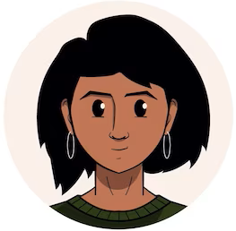
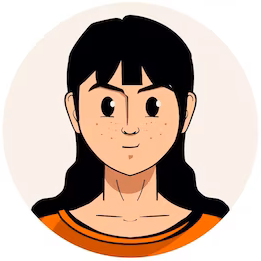

Projects MT /
Commercial Projects /
Team Phoenix
Creating an application for aero.com
Creation date
17.10.2022
All team members:12


invite
New
8 Task
367 Hours
Task list
Personal
ADD
List of tasks to start the project
Responsible
MICHAEL DORIAN
Tasks
24
Make a business plan
Find a programmer
Find an accountant
Pass the plan for approval
Expand list
19 comments
In Progress
14 Task
284 Hours
Discussion
ADD
Discussing the design with the customer
Discuss home page logic and color palette


invite
24.10.22 16:30
Personal
6 Task
129 Hours
Design system
UI Kit
ADD
Design for app
Development of the concept and style, the collection of the wiseboard, an analysis of the niche and competitors.
12 Task
127 Hours
Joint call
Discussion
ADD
Weekly general meeting by video link
A weekly summary and progress report.